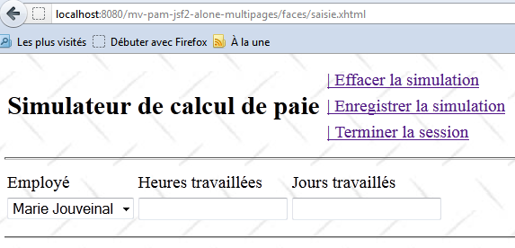
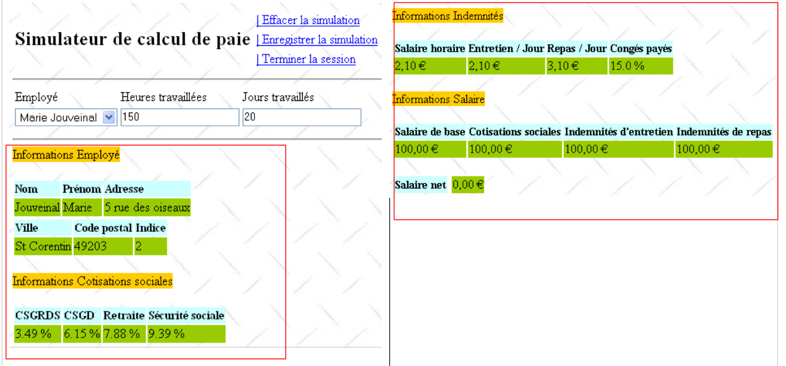
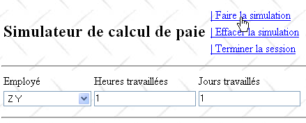
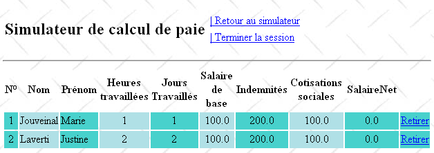
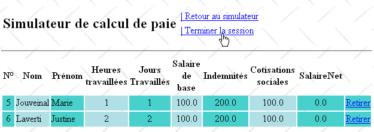

12. الإصدار 7 - تطبيق ويب PAM متعدد العروض/متعدد الصفحات
نعود هنا إلى البنية الأولية التي تمت فيها محاكاة طبقة [الأعمال]. ونعلم الآن أنه يمكن استبدالها بسهولة بطبقة [الأعمال] الفعلية. وتسهل طبقة [الأعمال] المحاكاة عملية الاختبار.
 |
تطبيق JSF هو من نوع MVC (نموذج-عرض-وحدة تحكم):
- [Faces Servlet] هو وحدة التحكم العامة التي يوفرها JSF. يتم توسيع وحدة التحكم هذه بواسطة معالجات الأحداث الخاصة بالتطبيق. كانت معالجات الأحداث التي صادفناها حتى الآن عبارة عن طرق لفئات تعمل كنماذج لصفحات JSF
- ترسل صفحات JSF الاستجابات إلى متصفح العميل. هذه هي طرق عرض التطبيق.
- تحتوي صفحات JSF على عناصر ديناميكية تُعرف باسم نموذج الصفحة. لاحظ أن النموذج، بالنسبة لبعض المؤلفين، يشمل الكيانات التي يتعامل معها التطبيق، مثل فئتي PayrollSheet أو Employee. للتمييز بين هذين النموذجين، يمكننا الإشارة إلى نموذج التطبيق ونموذج صفحة JSF.
في بنية JSF، قد يكون الانتقال من صفحة JSFi إلى صفحة JSFj مشكلة.
- تم عرض صفحة JSFi. من هذه الصفحة، يقوم المستخدم بتشغيل POST عبر حدث ما [1]
- في JSF، يتم التعامل مع طلب POST هذا بشكل عام [2a، 2b] بواسطة طريقة C من نموذج Mi لصفحة JSFi. يمكننا القول أن الطريقة C هي وحدة تحكم ثانوية.
- إذا كانت صفحة JSFj بحاجة إلى العرض في نهاية هذه الطريقة، فيجب على وحدة التحكم C:
- تحديث [2c] نموذج Mj لصفحة JSFj
- إرجاع [2a] إلى وحدة التحكم الرئيسية مفتاح التنقل الذي سيسمح بعرض صفحة JSFj
تتطلب الخطوة 1 أن يكون لنموذج Mi لصفحة JSFi مرجع إلى نموذج Mj لصفحة JSFj. وهذا يعقد الأمور إلى حد ما، مما يجعل نماذج Mi تعتمد على بعضها البعض. في الواقع، يجب أن يكون مدير C لنموذج Mi الذي يقوم بتحديث نموذج Mj على دراية بهذا الأخير. إذا كان نموذج Mj بحاجة إلى التغيير، فسيحتاج مدير C لنموذج Mi أيضًا إلى التغيير.
هناك سيناريو واحد يمكن فيه تجنب تبعيات النماذج: عندما يكون هناك نموذج M واحد تستخدمه جميع صفحات JSF. هذه البنية مناسبة فقط للتطبيقات التي تحتوي على عدد قليل من العروض، ولكنها سهلة الاستخدام للغاية. وهذا هو النموذج الذي نستخدمه حاليًا.
في هذا السياق، تكون بنية التطبيق كما يلي:
 |
12.1. طرق عرض التطبيق
ستكون طرق العرض المختلفة المعروضة للمستخدم كما يلي:
-
عرض [VueSaisies]، الذي يعرض نموذج المحاكاة
-
عرض [VueSimulation] المستخدم لعرض نتائج المحاكاة التفصيلية:


- عرض [SimulationsView]، الذي يسرد عمليات المحاكاة التي أجراها العميل

- [EmptySimulationsView]، التي تشير إلى أن العميل ليس لديه محاكاة أو لم يعد لديه محاكاة:

- عرض [ErrorView]، الذي يشير إلى وجود خطأ واحد أو أكثر:

12.2. مشروع NetBeans لطبقة [الويب]
سيكون مشروع NetBeans لهذا الإصدار هو مشروع Maven التالي:
 |
- في [1]، ملفات التكوين،
- في [2]، صفحات JSF،
- في [3]، ورقة الأنماط وصورة الخلفية للعروض،
- في [4]، فئات طبقة [الويب]،
- في [5]، الطبقات السفلية للتطبيق،
- في [6]، ملف الرسائل لتدويل التطبيق،
- في [7]، تبعيات المشروع.
دعونا نستعرض بعض هذه العناصر.
12.2.1. ملفات التكوين
ملفان [web.xml] و [faces-config.xml] مطابقان لتلك الموجودة في المشروع السابق، باستثناء تفصيل واحد في [web.xml]:
<dependencies>
<dependency>
<groupId>${project.groupId}</groupId>
<artifactId>mv-pam-ejb-metier-dao-eclipselink</artifactId>
<version>${project.version}</version>
<type>ejb</type>
</dependency>
<dependency>
<groupId>${project.groupId}</groupId>
<artifactId>mv-pam-jsf2-ejb</artifactId>
<version>${project.version}</version>
<type>war</type>
</dependency>
</dependencies>
- الأسطر 4-6: الصفحة الرئيسية هي صفحة [saisie.xhtml]
12.2.2. ورقة الأنماط
ملف [styles.css] كما يلي:
<?xml version="1.0" encoding="UTF-8"?>
<web-app version="3.0" xmlns="http://java.sun.com/xml/ns/javaee" xmlns:xsi="http://www.w3.org/2001/XMLSchema-instance" xsi:schemaLocation="http://java.sun.com/xml/ns/javaee http://java.sun.com/xml/ns/javaee/web-app_3_0.xsd">
...
<welcome-file-list>
<welcome-file>faces/saisie.xhtml</welcome-file>
</welcome-file-list>
...
</web-app>
فيما يلي بعض الأمثلة على كود JSF الذي يستخدم هذه الأنماط:
عرض المحاكاة
.simulationsHeader {
text-align: center;
font-style: italic;
color: Snow;
background: Teal;
}
.simuNum {
height: 25px;
text-align: center;
background: MediumTurquoise;
}
.simuNom {
text-align: left;
background: PowderBlue;
}
.simuPrenom {
width: 6em;
text-align: left;
color: Black;
background: MediumTurquoise;
}
.simuHT {
width: 3em;
text-align: center;
color: Black;
background: PowderBlue;
}
.simuJT {
width: 3em;
text-align: center;
color: Black;
background: MediumTurquoise;
}
.simuSalaireBase {
width: 9em;
text-align: center;
color: Black;
background: PowderBlue;
}
.simuIndemnites {
width: 3em;
text-align: center;
color: Black;
background: MediumTurquoise;
}
.simuCotisationsSociales {
width: 6em;
text-align: center;
background: PowderBlue;
}
.simuSalaireNet {
width: 10em;
text-align: center;
background: MediumTurquoise;
}
.erreursHeaders {
background: Teal;
background-color: #ff6633;
color: Snow;
font-style: italic;
text-align: center
}
.erreurClasse {
background: MediumTurquoise;
background-color: #ffcc66;
height: 25px;
text-align: center
}
.erreurMessage {
background: PowderBlue;
background-color: #ffcc99;
text-align: left
}
<h:dataTable value="#{form.simulations}" var="simulation"
والنتيجة هي كما يلي:

عرض الخطأ
headerClass="simulationsHeaders" columnClasses="simuNum,simuNom,simuPrenom,simuHT,simuJT,simuSalaireBase,simuIndemnites,simuCotisationsSociales,simuSalaireNet">
<h:dataTable value="#{form.erreurs}" var="erreur"

12.2.3. ملف الرسائل
ملف الرسائل [messages_fr.properties] هو كما يلي:
headerClass="erreursHeaders" columnClasses="erreurClasse,erreurMessage">
12.2.4. طبقة [الأعمال]
يتم تعديل طبقة [الأعمال] المحاكاة على النحو التالي:
form.titre=Simulateur de calcul de paie
form.comboEmployes.libell\u00e9=Employ\u00e9
form.heuresTravaill\u00e9es.libell\u00e9=Heures travaill\u00e9es
form.joursTravaill\u00e9s.libell\u00e9=Jours travaill\u00e9s
form.heuresTravaill\u00e9es.required=Indiquez le nombre d'heures travaill\u00e9es
form.heuresTravaill\u00e9es.validation=Donn\u00e9e incorrecte
form.joursTravaill\u00e9s.required=Indiquez le nombre de jours travaill\u00e9s
form.joursTravaill\u00e9s.validation=Donn\u00e9e incorrecte
form.btnSalaire.libell\u00e9=Salaire
form.btnRaz.libell\u00e9=Raz
exception.header=L'exception suivante s'est produite
exception.httpCode=Code HTTP de l'erreur
exception.message=Message de l'exception
exception.requestUri=Url demand\u00e9e lors de l'erreur
exception.servletName=Nom de la servlet demand\u00e9e lorsque l'erreur s'est produite
form.infos.employ\u00e9=Informations Employ\u00e9
form.employe.nom=Nom
form.employe.pr\u00e9nom=Pr\u00e9nom
form.employe.adresse=Adresse
form.employe.ville=Ville
form.employe.codePostal=Code postal
form.employe.indice=Indice
form.infos.cotisations=Informations Cotisations sociales
form.cotisations.csgrds=CSGRDS
form.cotisations.csgd=CSGD
form.cotisations.retraite=Retraite
form.cotisations.secu=S\u00e9curit\u00e9 sociale
form.infos.indemnites=Informations Indemnit\u00e9s
form.indemnites.salaireHoraire=Salaire horaire
form.indemnites.entretienJour=Entretien / Jour
form.indemnites.repasJour=Repas / Jour
form.indemnites.cong\u00e9sPay\u00e9s=Cong\u00e9s pay\u00e9s
form.infos.salaire=Informations Salaire
form.salaire.base=Salaire de base
form.salaire.cotisationsSociales=Cotisations sociales
form.salaire.entretien=Indemnit\u00e9s d'entretien
form.salaire.repas=Indemnit\u00e9s de repas
form.salaire.net=Salaire net
form.menu.faireSimulation=| Faire la simulation
form.menu.effacerSimulation=| Effacer la simulation
form.menu.enregistrerSimulation=| Enregistrer la simulation
form.menu.retourSimulateur=| Retour au simulateur
form.menu.voirSimulations=| Voir les simulations
form.menu.terminerSession=| Terminer la session
simulations.headers.nom=Nom
simulations.headers.nom=Nom
simulations.headers.prenom=Pr\u00e9nom
simulations.headers.heuresTravaillees=Heures travaill\u00e9es
simulations.headers.joursTravailles=Jours Travaill\u00e9s
simulations.headers.salaireBase=Salaire de base
simulations.headers.indemnites=Indemnit\u00e9s
simulations.headers.cotisationsSociales=Cotisations sociales
simulations.headers.salaireNet=SalaireNet
simulations.headers.numero=N\u00b0
erreur.titre=Une erreur s'est produite.
erreur.exceptions=Cha\u00eene des exceptions
exception.type=Type de l'exception
exception.message=Message associ\u00e9
- السطر 8: قائمة الموظفين
- السطر 7: نفس القائمة كقاموس مفهرس برقم الضمان الاجتماعي للموظفين
- الأسطر 24–39: طريقة findAllEmployees، التي تُرجع قائمة الموظفين. تُنشئ هذه الطريقة قائمة مبرمجة بشكل ثابت وتشير إليها عبر حقل الموظفين من السطر 8.
- الأسطر 27–33: يتم إنشاء قائمة وقاموس لموظفين اثنين
- السطر 35: يتم إضافة موظف إلى قائمة الموظفين (السطر 8) ولكن ليس إلى قاموس hashEmployees (السطر 7). وذلك حتى يظهر الموظف في القائمة المنسدلة للموظفين ولكن لا يتم التعرف عليه بواسطة طريقة calculatePayroll (السطر 14)، مما يتسبب في إلقاء استثناء (السطر 17).
- الأسطر 11–21: طريقة calculatePayroll
- السطر 14: يتم البحث عن الموظف في قاموس `hashEmployees` باستخدام رقم الضمان الاجتماعي الخاص به. إذا لم يتم العثور عليه، يتم إصدار استثناء (الأسطر 16–18). وبالتالي، سنحصل على استثناء للموظف الذي يحمل رقم الضمان الاجتماعي X الذي تمت إضافته في السطر 35 إلى قائمة `employees` ولكن ليس إلى قاموس `hashEmployees`.
- السطر 20: يتم إنشاء كعب راتب وهمي وإرجاعه.
12.3. حبوب التطبيق
سيكون هناك ثلاث حبات بنطاقات مختلفة:
 |
12.3.1. حبة ApplicationData
سيكون لحبة ApplicationData نطاق التطبيق:
package metier;
...
public class Metier implements ImetierLocal, Serializable {
// list of employees
private Map<String,Employe> hashEmployes=new HashMap<String,Employe>();
private List<Employe> listEmployes;
// get your payslip
public FeuilleSalaire calculerFeuilleSalaire(String SS,
double nbHeuresTravaillées, int nbJoursTravaillés) {
// we get the employee
Employe e=hashEmployes.get(SS);
// an exception is thrown if the employee does not exist
if(e==null){
throw new PamException(String.format("L'employé de n° SS [%s] n'existe pas",SS),1);
}
// a fictitious payslip is returned
return new FeuilleSalaire(e,new Cotisation(3.49,6.15,9.39,7.88),e.getIndemnite(),new ElementsSalaire(100,100,100,100,100));
}
// list of employees
public List<Employe> findAllEmployes() {
if(listEmployes==null){
// create a list of three employees
listEmployes=new ArrayList<Employe>();
listEmployes.add(new Employe("254104940426058","Jouveinal","Marie","5 rue des oiseaux","St Corentin","49203",new Indemnite(2,2.1,2.1,3.1,15)));
listEmployes.add(new Employe("260124402111742","Laverti","Justine","La brûlerie","St Marcel","49014",new Indemnite(1,1.93,2,3,12)));
// employee dictionary
for(Employe e:listEmployes){
hashEmployes.put(e.getSS(),e);
}
// we add an employee who doesn't exist in the dictionary
listEmployes.add(new Employe("X","Y","Z","La brûlerie","St Marcel","49014",new Indemnite(1,1.93,2,3,12)));
}
// we return the list of employees
return listEmployes;
}
}
- السطر 11: تجعل العلامة @Named الفئة حبة مُدارة. لاحظ أنه، على عكس المشروع السابق، لم نستخدم العلامة @ManagedBean. والسبب هو أن الإشارة إلى هذه الفئة يجب حقنها في فئة أخرى باستخدام العلامة @Inject، ولا تقوم @Inject بحقن سوى الفئات التي تحمل العلامة @Named.
- السطر 12: تجعل العلامة التوضيحية @ApplicationScoped الفئة كائنًا على نطاق التطبيق. لاحظ أن فئة العلامة التوضيحية هي [javax.enterprise.context.ApplicationScoped] (السطر 6) وليست [javax.faces.bean.ApplicationScoped] كما هو الحال في مكونات Bean في المشروع السابق.
يخدم bean ApplicationData غرضين:
- السطر 16: الحفاظ على مرجع إلى طبقة [business]،
- السطران 18-19: تعريف مسجل يمكن استخدامه من قبل حبات أخرى للتسجيل في وحدة تحكم GlassFish.
12.3.2. حبة SessionData
سيكون لحبة SessionData نطاق جلسة:
package web.beans.application;
import java.io.Serializable;
import java.util.logging.Logger;
import javax.annotation.PostConstruct;
import javax.enterprise.context.ApplicationScoped;
import javax.inject.Named;
import metier.IMetierLocal;
import metier.Metier;
@Named
@ApplicationScoped
public class ApplicationData implements Serializable {
// business layer
private IMetierLocal metier = new Metier();
// logger
private boolean logsEnabled = true;
private final Logger logger = Logger.getLogger("pam");
public ApplicationData() {
}
@PostConstruct
public void init() {
// log
if (isLogsEnabled()) {
logger.info("ApplicationData");
}
}
// getters and setters
...
}
- السطر 13: فئة SessionData هي حبة مُدارة (@Named) يمكن حقنها في حبات مُدارة أخرى،
- السطر 14: لها نطاق جلسة (@SessionScoped)،
- السطران 18-19: يتم إدخال مرجع إلى حبة ApplicationData فيها (@Inject)،
- الأسطر 21–32: بيانات التطبيق التي يجب الحفاظ عليها عبر الجلسات.
- السطر 21: قائمة عمليات المحاكاة التي أجراها المستخدم،
- السطر 22: رقم آخر محاكاة تم حفظها،
- السطر 23: آخر محاكاة تم إجراؤها،
- الأسطر 25–30: خيارات القائمة،
- السطر 32: الإعدادات المحلية للتطبيق.
الأسطر 39–44: يتم تنفيذ طريقة init بعد إنشاء مثيل للفئة (@PostConstruct). هنا، يتم استخدامها فقط لتسجيل تنفيذها. يجب أن نتمكن من التحقق من أنها يتم تنفيذها مرة واحدة فقط لكل مستخدم لأن الفئة تندرج ضمن نطاق الجلسة. السطر 42: تستخدم الطريقة المسجل المحدد في فئة ApplicationData. لهذا السبب احتجنا إلى حقن مرجع إلى هذا الفول (الأسطر 18–19).
12.3.3. حبة النموذج
حبة النموذج (Form bean) تندرج ضمن نطاق الطلب:
package web.beans.session;
import java.io.Serializable;
import java.util.ArrayList;
import java.util.List;
import javax.annotation.PostConstruct;
import javax.enterprise.context.SessionScoped;
import javax.inject.Inject;
import javax.inject.Named;
import web.beans.application.ApplicationData;
import web.entities.Simulation;
@Named
@SessionScoped
public class SessionData implements Serializable {
// application
@Inject
private ApplicationData applicationData;
// simulations
private List<Simulation> simulations = new ArrayList<Simulation>();
private int numDerniereSimulation = 0;
private Simulation simulation;
// menus
private boolean menuFaireSimulationIsRendered = true;
private boolean menuEffacerSimulationIsRendered = true;
private boolean menuEnregistrerSimulationIsRendered;
private boolean menuVoirSimulationsIsRendered;
private boolean menuRetourSimulateurIsRendered;
private boolean menuTerminerSessionIsRendered = true;
// local
private String locale="fr_FR";
// manufacturer
public SessionData() {
}
@PostConstruct
public void init() {
// log
if (applicationData.isLogsEnabled()) {
applicationData.getLogger().info("SessionData");
}
}
// menu management
public void setMenu(boolean menuFaireSimulationIsRendered, boolean menuEnregistrerSimulationIsRendered, boolean menuEffacerSimulationIsRendered, boolean menuVoirSimulationsIsRendered, boolean menuRetourSimulateurIsRendered, boolean menuTerminerSessionIsRendered) {
this.setMenuFaireSimulationIsRendered(menuFaireSimulationIsRendered);
this.setMenuEnregistrerSimulationIsRendered(menuEnregistrerSimulationIsRendered);
this.setMenuVoirSimulationsIsRendered(menuVoirSimulationsIsRendered);
this.setMenuEffacerSimulationIsRendered(menuEffacerSimulationIsRendered);
this.setMenuRetourSimulateurIsRendered(menuRetourSimulateurIsRendered);
this.setMenuTerminerSessionIsRendered(menuTerminerSessionIsRendered);
}
// getters and setters
...
}
- السطر 17، الفئة عبارة عن حبة مُدارة (@Named)،
- السطر 18، نطاق الطلب (@RequestScoped)،
- السطران 24-25: حقن مرجع إلى الحبة ذات نطاق التطبيق ApplicationData،
- السطران 26-27: حقن مرجع إلى الحبة SessionData ذات نطاق الجلسة.
12.4. صفحات التطبيق
 |
12.4.1. [layout.xhtml]
تتولى صفحة [layout.xhtml] إدارة تخطيط جميع طرق العرض:
package web.beans.request;
import java.util.ArrayList;
import java.util.List;
import javax.enterprise.context.RequestScoped;
import javax.faces.context.FacesContext;
import javax.inject.Inject;
import javax.inject.Named;
import javax.servlet.http.HttpServletRequest;
import jpa.Employe;
import metier.FeuilleSalaire;
import web.beans.application.ApplicationData;
import web.beans.session.*;
import web.entities.Erreur;
import web.entities.Simulation;
@Named
@RequestScoped
public class Form {
public Form() {
}
// other beans
@Inject
private ApplicationData applicationData;
@Inject
private SessionData sessionData;
// the view model
private String comboEmployesValue = "";
private String heuresTravaillées = "";
private String joursTravaillés = "";
private Integer numSimulationToDelete;
private List<Erreur> erreurs = new ArrayList<Erreur>();
private FeuilleSalaire feuilleSalaire;
// list of employees
public List<Employe> getEmployes(){
return applicationData.getMetier().findAllEmployes();
}
// menu action
public String faireSimulation() {
...
}
public String enregistrerSimulation() {
...
}
public String effacerSimulation() {
...
}
public String voirSimulations() {
...
}
public String retourSimulateur() {
...
}
public String terminerSession() {
...
}
public String retirerSimulation() {
...
}
private void razFormulaire() {
...
}
// getters and setters
...
}
تتكون كل طريقة عرض من العناصر التالية:
- رأس يتم عرضه بواسطة الجزء [entete.xhtml] (السطر 24)،
- جسم يتكون من جزأين يسميان part1 (الأسطر 26–28) و part2 (السطر 29)،
- السطر 8: تضمن سمة locale تدويل الصفحات. هنا، سيكون هناك سمة واحدة فقط: fr_FR،
- الأسطر 14–19: كود JavaScript.
يتم عرض الصفحة [layout.xhtml] على النحو التالي:
 |
- في [1]، العنوان [entete.xhtml]،
- في [2]، جزء part1.
12.4.2. الرأس [entete.xhtml]
فيما يلي كود صفحة [entete.xhtml]:
<?xml version='1.0' encoding='UTF-8' ?>
<!DOCTYPE html PUBLIC "-//W3C//DTD XHTML 1.0 Transitional//EN" "http://www.w3.org/TR/xhtml1/DTD/xhtml1-transitional.dtd">
<html xmlns="http://www.w3.org/1999/xhtml"
xmlns:h="http://java.sun.com/jsf/html"
xmlns:f="http://java.sun.com/jsf/core"
xmlns:ui="http://java.sun.com/jsf/facelets">
<f:view locale="#{sessionData.locale}">
<h:head>
<title><h:outputText value="#{msg['form.titre']}"/></title>
<h:outputStylesheet library="css" name="styles.css"/>
</h:head>
<script type="text/javascript">
function raz(){
// on change les valeurs postées
document.forms['formulaire'].elements['formulaire:comboEmployes'].value="0";
document.forms['formulaire'].elements['formulaire:heuresTravaillees'].value="0";
document.forms['formulaire'].elements['formulaire:joursTravailles'].value="0";
}
</script>
<h:body style="background-image: url('${request.contextPath}/resources/images/standard.jpg');">
<h:form id="formulaire">
<!-- entete -->
<ui:include src="entete.xhtml" />
<!-- content -->
<ui:insert name="part1" >
Gestion des assistantes maternelles
</ui:insert>
<ui:insert name="part2"/>
</h:form>
</h:body>
</f:view>
</html>
- السطر 12: عنوان التطبيق،
- الأسطر 16–21: الروابط الستة المطابقة للإجراءات الستة التي يمكن للمستخدم تنفيذها. يتم التحكم في هذه الروابط (السمة rendered) بواسطة قيم منطقية في حبة SessionData،
- السطر 17: يؤدي النقر على رابط [Clear Simulation] إلى تشغيل دالة JavaScript raz. تم تعريف هذه الدالة في القالب [layout.xhtml]،
- السطر 18: تضمن السمة immediate=true عدم التحقق من صحة البيانات قبل تنفيذ طريقة [Form].enregistrerSimulation. وهذا أمر مقصود. قد ترغب في حفظ آخر محاكاة تم إجراؤها قبل دقيقة واحدة حتى لو كانت البيانات التي تم إدخالها منذ ذلك الحين في النموذج (ولكن لم يتم التحقق من صحتها بعد) غير صالحة. وينطبق الأمر نفسه على الإجراءات [View Simulations] و[Clear Simulation] و[Return to Simulator] و[End Session].
12.5. حالات استخدام التطبيق
12.5.1. عرض الصفحة الرئيسية
الصفحة الرئيسية هي الصفحة التالية [saisie.xhtml]:
<?xml version='1.0' encoding='UTF-8' ?>
<!DOCTYPE html PUBLIC "-//W3C//DTD XHTML 1.0 Transitional//EN" "http://www.w3.org/TR/xhtml1/DTD/xhtml1-transitional.dtd">
<html xmlns="http://www.w3.org/1999/xhtml"
xmlns:h="http://java.sun.com/jsf/html"
xmlns:f="http://java.sun.com/jsf/core"
xmlns:ui="http://java.sun.com/jsf/facelets">
<ui:composition>
<!-- entete -->
<h:panelGrid columns="2">
<h:panelGroup>
<h2><h:outputText value="#{msg['form.titre']}"/></h2>
</h:panelGroup>
<h:panelGroup>
<h:panelGrid columns="1">
<h:commandLink id="cmdFaireSimulation" value="#{msg['form.menu.faireSimulation']}" action="#{form.faireSimulation}" rendered="#{sessionData.menuFaireSimulationIsRendered}"/>
<h:commandLink id="cmdEffacerSimulation" onclick="raz()" value="#{msg['form.menu.effacerSimulation']}" action="#{form.effacerSimulation}" rendered="#{sessionData.menuEffacerSimulationIsRendered}"/>
<h:commandLink id="cmdEnregistrerSimulation" immediate="true" value="#{msg['form.menu.enregistrerSimulation']}" action="#{form.enregistrerSimulation}" rendered="#{sessionData.menuEnregistrerSimulationIsRendered}"/>
<h:commandLink id="cmdVoirSimulations" immediate="true" value="#{msg['form.menu.voirSimulations']}" action="#{form.voirSimulations}" rendered="#{sessionData.menuVoirSimulationsIsRendered}"/>
<h:commandLink id="cmdRetourSimulateur" immediate="true" value="#{msg['form.menu.retourSimulateur']}" action="#{form.retourSimulateur}" rendered="#{sessionData.menuRetourSimulateurIsRendered}"/>
<h:commandLink id="cmdTerminerSession" immediate="true" value="#{msg['form.menu.terminerSession']}" action="#{form.terminerSession}" rendered="#{sessionData.menuTerminerSessionIsRendered}"/>
</h:panelGrid>
</h:panelGroup>
</h:panelGrid>
<hr/>
</ui:composition>
</html>
- السطر 8: يتم عرضه داخل صفحة [layout.xhtml]،
- السطر 9: بدلاً من الجزء المسمى part1. في هذا الجزء، يتم عرض الصفحة [saisie2.xhtml]:
<?xml version='1.0' encoding='UTF-8' ?>
<!DOCTYPE html PUBLIC "-//W3C//DTD XHTML 1.0 Transitional//EN" "http://www.w3.org/TR/xhtml1/DTD/xhtml1-transitional.dtd">
<html xmlns="http://www.w3.org/1999/xhtml"
xmlns:h="http://java.sun.com/jsf/html"
xmlns:f="http://java.sun.com/jsf/core"
xmlns:ui="http://java.sun.com/jsf/facelets">
<ui:composition template="layout.xhtml">
<ui:define name="part1">
<ui:include src="saisie2.xhtml"/>
</ui:define>
</ui:composition>
</html>
يعرض هذا الرمز العرض التالي:
 |
السؤال: أكمل السطر 13 من كود XHTML. يتم توفير قائمة العناصر الموجودة في مربع القائمة المنسدلة الخاص بالموظفين بواسطة إحدى طرق كائن [Form]. اكتب هذه الطريقة. سيتم تعيين خاصية itemValue للعناصر المعروضة في مربع القائمة المنسدلة على رقم الضمان الاجتماعي للموظف، وستكون خاصية itemLabel عبارة عن سلسلة تتكون من الاسم الأول واسم العائلة للموظف.
السؤال: كيف يجب تهيئة bean [SessionData] بحيث تكون قائمة الرؤوس هي تلك الموضحة أعلاه أثناء طلب GET الأولي الموجه إلى النموذج؟
12.5.2. إجراء [ faireSimulation]
فيما يلي كود JSF الخاص بعملية [runSimulation]:
<?xml version='1.0' encoding='UTF-8' ?>
<!DOCTYPE html PUBLIC "-//W3C//DTD XHTML 1.0 Transitional//EN" "http://www.w3.org/TR/xhtml1/DTD/xhtml1-transitional.dtd">
<html xmlns="http://www.w3.org/1999/xhtml"
xmlns:h="http://java.sun.com/jsf/html"
xmlns:f="http://java.sun.com/jsf/core"
xmlns:ui="http://java.sun.com/jsf/facelets">
<h:panelGrid columns="3">
<h:outputText value="#{msg['form.comboEmployes.libellé']}"/>
<h:outputText value="#{msg['form.heuresTravaillées.libellé']}"/>
<h:outputText value="#{msg['form.joursTravaillés.libellé']}"/>
<h:selectOneMenu id="comboEmployes" value="#{form.comboEmployesValue}">
<f:selectItems .../>
</h:selectOneMenu>
<h:inputText id="heuresTravaillees" value="#{form.heuresTravaillées}" required="true" requiredMessage="#{msg['form.heuresTravaillées.required']}" validatorMessage="#{msg['form.heuresTravaillées.validation']}">
<f:validateDoubleRange minimum="0" maximum="300"/>
</h:inputText>
<h:inputText id="joursTravailles" value="#{form.joursTravaillés}" required="true" requiredMessage="#{msg['form.joursTravaillés.required']}" validatorMessage="#{msg['form.joursTravaillés.validation']}">
<f:validateLongRange minimum="0" maximum="31"/>
</h:inputText>
<h:panelGroup></h:panelGroup>
<h:message for="heuresTravaillees" styleClass="error"/>
<h:message for="joursTravailles" styleClass="error"/>
</h:panelGrid>
<hr/>
</html>
تقوم الإجراء [faireSimulation] بحساب كشف الراتب:

من الصفحة السابقة، نحصل على النتيجة التالية:
 |
 |
يتم عرض المحاكاة على الصفحة التالية [simulation.xhtml]:
<h:commandLink id="cmdFaireSimulation" value="#{msg['form.menu.faireSimulation']}" action="#{form.faireSimulation}" rendered="#{sessionData.menuFaireSimulationIsRendered}"/>
- السطر 8: يتم إدراج صفحة [simulation.xhtml] في صفحة [layout.xhtml]،
- الأسطر 9-11: يتم عرض منطقة الإدخال في جزء part1 من صفحة التخطيط،
- الأسطر 12–91: يتم عرض المحاكاة في جزء part2 من صفحة التخطيط.
السؤال: اكتب طريقة [doSimulation] لفئة [Form]. سيتم حفظ المحاكاة في حبة SessionData.
12.5.3. معالجة الأخطاء
نريد أن نتمكن من معالجة الاستثناءات التي قد تحدث أثناء حساب المحاكاة بشكل صحيح. للقيام بذلك، سيستخدم كود طريقة [runSimulation] كتلة try/catch:
<?xml version='1.0' encoding='UTF-8' ?>
<!DOCTYPE html PUBLIC "-//W3C//DTD XHTML 1.0 Transitional//EN" "http://www.w3.org/TR/xhtml1/DTD/xhtml1-transitional.dtd">
<html xmlns="http://www.w3.org/1999/xhtml"
xmlns:h="http://java.sun.com/jsf/html"
xmlns:f="http://java.sun.com/jsf/core"
xmlns:ui="http://java.sun.com/jsf/facelets">
<ui:composition template="layout.xhtml">
<ui:define name="part1">
<ui:include src="saisie2.xhtml"/>
</ui:define>
<ui:define name="part2">
<h:outputText value="#{msg['form.infos.employé']}" styleClass="titreInfos"/>
<br/><br/>
<h:panelGrid columns="3" rowClasses="libelle,info">
<h:outputText value="#{msg['form.employe.nom']}"/>
<h:outputText value="#{msg['form.employe.prénom']}"/>
<h:outputText value="#{msg['form.employe.adresse']}"/>
<h:outputText value="#{form.feuilleSalaire.employe.nom}"/>
<h:outputText value="#{form.feuilleSalaire.employe.prenom}"/>
<h:outputText value="#{form.feuilleSalaire.employe.adresse}"/>
</h:panelGrid>
<h:panelGrid columns="3" rowClasses="libelle,info">
<h:outputText value="#{msg['form.employe.ville']}"/>
<h:outputText value="#{msg['form.employe.codePostal']}"/>
<h:outputText value="#{msg['form.employe.indice']}"/>
<h:outputText value="#{form.feuilleSalaire.employe.ville}"/>
<h:outputText value="#{form.feuilleSalaire.employe.codePostal}"/>
<h:outputText value="#{form.feuilleSalaire.employe.indemnite.indice}"/>
</h:panelGrid>
<br/>
<h:outputText value="#{msg['form.infos.cotisations']}" styleClass="titreInfos"/>
<br/><br/>
<h:panelGrid columns="4" rowClasses="libelle,info">
<h:outputText value="#{msg['form.cotisations.csgrds']}"/>
<h:outputText value="#{msg['form.cotisations.csgd']}"/>
<h:outputText value="#{msg['form.cotisations.retraite']}"/>
<h:outputText value="#{msg['form.cotisations.secu']}"/>
<h:outputText value="#{form.feuilleSalaire.cotisation.csgrds} %"/>
<h:outputText value="#{form.feuilleSalaire.cotisation.csgd} %"/>
<h:outputText value="#{form.feuilleSalaire.cotisation.retraite} %"/>
<h:outputText value="#{form.feuilleSalaire.cotisation.secu} %"/>
</h:panelGrid>
<br/>
<h:outputText value="#{msg['form.infos.indemnites']}" styleClass="titreInfos"/>
<br/><br/>
<h:panelGrid columns="4" rowClasses="libelle,info">
<h:outputText value="#{msg['form.indemnites.salaireHoraire']}"/>
<h:outputText value="#{msg['form.indemnites.entretienJour']}"/>
<h:outputText value="#{msg['form.indemnites.repasJour']}"/>
<h:outputText value="#{msg['form.indemnites.congésPayés']}"/>
<h:outputFormat value="{0,number,currency}">
<f:param value="#{form.feuilleSalaire.employe.indemnite.baseHeure}"/>
</h:outputFormat>
<h:outputFormat value="{0,number,currency}">
<f:param value="#{form.feuilleSalaire.employe.indemnite.entretienJour}"/>
</h:outputFormat>
<h:outputFormat value="{0,number,currency}">
<f:param value="#{form.feuilleSalaire.employe.indemnite.repasJour}"/>
</h:outputFormat>
<h:outputText value="#{form.feuilleSalaire.employe.indemnite.indemnitesCP} %"/>
</h:panelGrid>
<br/>
<h:outputText value="#{msg['form.infos.salaire']}" styleClass="titreInfos"/>
<br/><br/>
<h:panelGrid columns="4" rowClasses="libelle,info">
<h:outputText value="#{msg['form.salaire.base']}"/>
<h:outputText value="#{msg['form.salaire.cotisationsSociales']}"/>
<h:outputText value="#{msg['form.salaire.entretien']}"/>
<h:outputText value="#{msg['form.salaire.repas']}"/>
<h:outputFormat value="{0,number,currency}">
<f:param value="#{form.feuilleSalaire.elementsSalaire.salaireBase}"/>
</h:outputFormat>
<h:outputFormat value="{0,number,currency}">
<f:param value="#{form.feuilleSalaire.elementsSalaire.cotisationsSociales}"/>
</h:outputFormat>
<h:outputFormat value="{0,number,currency}">
<f:param value="#{form.feuilleSalaire.elementsSalaire.indemnitesEntretien}"/>
</h:outputFormat>
<h:outputFormat value="{0,number,currency}">
<f:param value="#{form.feuilleSalaire.elementsSalaire.indemnitesRepas}"/>
</h:outputFormat>
</h:panelGrid>
<br/>
<h:panelGrid columns="3" columnClasses="libelle,col2,info">
<h:outputText value="#{msg['form.salaire.net']}"/>
<h:panelGroup></h:panelGroup>
<h:outputFormat value="{0,number,currency}">
<f:param value="#{form.feuilleSalaire.elementsSalaire.salaireNet}"/>
</h:outputFormat>
</h:panelGrid>
</ui:define>
</ui:composition>
</html>
فيما يلي قائمة الأخطاء التي تم إنشاؤها في السطر 15:
// action du menu
public String faireSimulation(){
try{
// on calcule la feuille de salaire
feuilleSalaire= ...
// on affiche la simulation
...
// on met à jour le menu
...
// on rend la vue simulation
return "simulation";
}catch(Throwable th){
// on vide la liste des erreurs précédentes
...
// on crée la nouvelle liste des erreurs
...
// on affiche la vue vueErreur
...
// on met à jour le menu
...
// on affiche la vue erreur
return "erreurs";
}
}
يتم تعريف فئة Error على النحو التالي:
// le modèle des vues
...
private List<Erreur> erreurs=new ArrayList<Erreur>();
...
ستكون الأخطاء عبارة عن استثناءات يتم تخزين اسم فئتها في حقل الفئة ويتم تخزين رسالتها في حقل الرسالة.
تتكون قائمة الأخطاء التي تم إنشاؤها في طريقة [faireSimulation] من:
- الاستثناء الأولي th من النوع Throwable الذي حدث،
- سببها th.getCause() إن وجد،
- سبب السبب h.getCause().getCause() إن وجد.
- ...
فيما يلي مثال على قائمة الأخطاء:

في المثال أعلاه، لا يوجد الموظف [Z Y] في قاموس الموظفين الذي تستخدمه طبقة [الأعمال] المحاكاة. في هذه الحالة، ترمي طبقة [الأعمال] المحاكاة استثناءً (السطر 6 أدناه):
package web.entities;
public class Erreur {
public Erreur() {
}
// field
private String classe;
private String message;
// manufacturer
public Erreur(String classe, String message){
this.setClasse(classe);
this.message=message;
}
// getters and setters
...
}
والنتيجة هي كما يلي:

يتم عرض هذا العرض من خلال الصفحة [errors.xhtml] التالية:
public FeuilleSalaire calculerFeuilleSalaire(String SS, double nbHeuresTravaillées, int nbJoursTravaillés) {
// we get the employee
Employe e=hashEmployes.get(SS);
// an exception is thrown if the employee does not exist
if(e==null){
throw new PamException(String.format("L'employé de n° SS [%s] n'existe pas",SS),1);
}
...
}
السؤال: أكمل طريقة [faireSimulation] بحيث تعرض طريقة العرض [vueErreur] في حالة حدوث استثناء.
12.5.4. الإجراء [ effacerSimulation]
يتيح الإجراء [clearSimulation] للمستخدم العودة إلى نموذج فارغ:
 |
فيما يلي كود JSF للرابط [clearSimulation]:
<?xml version='1.0' encoding='UTF-8' ?>
<!DOCTYPE html PUBLIC "-//W3C//DTD XHTML 1.0 Transitional//EN" "http://www.w3.org/TR/xhtml1/DTD/xhtml1-transitional.dtd">
<html xmlns="http://www.w3.org/1999/xhtml"
xmlns:h="http://java.sun.com/jsf/html"
xmlns:f="http://java.sun.com/jsf/core"
xmlns:ui="http://java.sun.com/jsf/facelets">
<ui:composition template="layout.xhtml">
<ui:define name="part1">
<h3><h:outputText value="#{msg['erreur.titre']}"/></h3>
<h:dataTable value="#{form.erreurs}" var="erreur"
headerClass="erreursHeaders" columnClasses="erreurClasse,erreurMessage">
<f:facet name="header">
<h:outputText value="#{msg['erreur.exceptions']}"/>
</f:facet>
<h:column>
<f:facet name="header">
<h:outputText value="#{msg['exception.type']}"/>
</f:facet>
<h:outputText value="#{erreur.classe}"/>
</h:column>
<h:column>
<f:facet name="header">
<h:outputText value="#{msg['exception.message']}"/>
</f:facet>
<h:outputText value="#{erreur.message}"/>
</h:column>
</h:dataTable>
</ui:define>
</ui:composition>
</html>
يؤدي النقر على رابط [ClearSimulation] أولاً إلى تشغيل استدعاء لوظيفة JavaScript raz(). يتم تعريف هذه الطريقة في صفحة [layout.xhtml]:
<h:commandLink id="cmdEffacerSimulation" onclick="raz()" value="#{msg['form.menu.effacerSimulation']}" action="#{form.effacerSimulation}" rendered="#{sessionData.menuEffacerSimulationIsRendered}"/>
تقوم الأسطر 4–6 بتغيير القيم المرسلة. لاحظ أن
- القيم المرسلة صالحة، أي أنها ستجتاز عمليات التحقق من صحة حقول الإدخال hoursWorked و daysWorked.
- لا تقوم الدالة `raz` بإرسال النموذج. بدلاً من ذلك، سيتم إرسال النموذج عبر الرابط `cmdEffacerSimulation`. سيتم هذا الإرسال بعد تنفيذ دالة JavaScript `raz`.
أثناء الإرسال، ستتبع القيم المرسلة العملية العادية: التحقق من الصحة، ثم التعيين إلى حقول النموذج. وهذه هي كما يلي في فئة [Form]:
<script type="text/javascript">
function raz(){
// change posted values
document.forms['formulaire'].elements['formulaire:comboEmployes'].value="0";
document.forms['formulaire'].elements['formulaire:heuresTravaillees'].value="0";
document.forms['formulaire'].elements['formulaire:joursTravailles'].value="0";
}
</script>
// the view model
private String comboEmployesValue;
private String heuresTravaillées;
private String joursTravaillés;
ستتلقى هذه الحقول الثلاثة القيم الثلاث التي تم إرسالها {"0", "0", "0"}. بمجرد اكتمال هذه التعيينات، سيتم تنفيذ طريقة clearSimulation.
السؤال: اكتب طريقة [effacerSimulation] لفئة [Form]. تأكد من:
-
يتم عرض حقل الإدخال فقط،
-
تعيين مربع القائمة المنسدلة على العنصر الأول،
-
عرض سلاسل فارغة في حقول الإدخال hoursWorked و daysWorked.
12.5.5. الإجراء [ enregistrerSimulation]
فيما يلي كود JSF للرابط [saveSimulation]:
...
تقوم الإجراء [saveSimulation] المرتبط بالرابط بحفظ المحاكاة الحالية في قائمة المحاكاة التي يتم الاحتفاظ بها في فئة [SessionData]:
<h:commandLink id="cmdEnregistrerSimulation" immediate="true" value="#{msg['form.menu.enregistrerSimulation']}" action="#{form.enregistrerSimulation}" rendered="#{sessionData.menuEnregistrerSimulationIsRendered}"/>
فئة Simulation في ملف web.entities هي كما يلي:
private List<Simulation> simulations=new ArrayList<Simulation>();
تسمح لك هذه الفئة بحفظ محاكاة أنشأها المستخدم:
- السطر 11: رقم المحاكاة،
- السطر 12: كشف الراتب الذي تم حسابه،
- السطر 13: عدد ساعات العمل،
- السطر 14: عدد أيام العمل.
فيما يلي مثال على سجل:

من الصفحة السابقة، نحصل على النتيجة التالية:

يتم زيادة رقم المحاكاة مع كل سجل جديد. وهو ينتمي إلى حبة SessionData:
package web.entities;
import metier.FeuilleSalaire;
public class Simulation {
public Simulation() {
}
// simulation fields
private Integer num;
private FeuilleSalaire feuilleSalaire;
private String heuresTravaillées;
private String joursTravaillés;
// manufacturer
public Simulation(Integer num,String heuresTravaillées, String joursTravaillés, FeuilleSalaire feuilleSalaire){
this.setNum(num);
this.setFeuilleSalaire(feuilleSalaire);
this.setHeuresTravaillées(heuresTravaillées);
this.setJoursTravaillés(joursTravaillés);
}
public double getIndemnites(){
return feuilleSalaire.getElementsSalaire().getIndemnitesEntretien()+ feuilleSalaire.getElementsSalaire().getIndemnitesRepas();
}
// getters and setters
...
}
- السطر 2: رقم آخر محاكاة تم إجراؤها.
يمكن تنفيذ طريقة [saveSimulation] على النحو التالي:
- استرجاع رقم آخر محاكاة من حبة [SessionData] وزيادته،
- إضافة المحاكاة الجديدة إلى قائمة المحاكاة التي تحتفظ بها فئة [SessionData]،
- عرض جدول المحاكاة:
 |
يتم عرض جدول المحاكاة بواسطة الصفحة [simulations.xhtml]:
// simulations
private List<Simulation> simulations = new ArrayList<Simulation>();
private int numDerniereSimulation = 0;
private Simulation simulation;
- السطر 8، يتم إدراج الصفحة [simulations.xhtml] داخل الصفحة [layout.xhtml]،
- السطر 9، بدلاً من الجزء المسمى part1،
- السطر 11، تستخدم علامة <h:dataTable> الحقل #{sessionData.simulations} كمصدر للبيانات، أي الحقل التالي:
<?xml version='1.0' encoding='UTF-8' ?>
<!DOCTYPE html PUBLIC "-//W3C//DTD XHTML 1.0 Transitional//EN" "http://www.w3.org/TR/xhtml1/DTD/xhtml1-transitional.dtd">
<html xmlns="http://www.w3.org/1999/xhtml"
xmlns:h="http://java.sun.com/jsf/html"
xmlns:f="http://java.sun.com/jsf/core"
xmlns:ui="http://java.sun.com/jsf/facelets">
<ui:composition template="layout.xhtml">
<ui:define name="part1">
<!-- simulation table -->
<h:dataTable value="#{sessionData.simulations}" var="simulation"
headerClass="simulationsHeaders" columnClasses="simuNum,simuNom,simuPrenom,simuHT,simuJT,simuSalaireBase,simuIndemnites,simuCotisationsSociales,simuSalaireNet">
<h:column>
<f:facet name="header">
<h:outputText value="#{msg['simulations.headers.numero']}"/>
</f:facet>
<h:outputText value="#{simulation.num}"/>
</h:column>
<h:column>
<f:facet name="header">
<h:outputText value="#{msg['simulations.headers.nom']}"/>
</f:facet>
<h:outputText value="#{simulation.feuilleSalaire.employe.nom}"/>
</h:column>
<h:column>
<f:facet name="header">
<h:outputText value="#{msg['simulations.headers.prenom']}"/>
</f:facet>
<h:outputText value="#{simulation.feuilleSalaire.employe.prenom}"/>
</h:column>
<h:column>
<f:facet name="header">
<h:outputText value="#{msg['simulations.headers.heuresTravaillees']}"/>
</f:facet>
<h:outputText value="#{simulation.heuresTravaillées}"/>
</h:column>
<h:column>
<f:facet name="header">
<h:outputText value="#{msg['simulations.headers.joursTravailles']}"/>
</f:facet>
<h:outputText value="#{simulation.joursTravaillés}"/>
</h:column>
<h:column>
<f:facet name="header">
<h:outputText value="#{msg['simulations.headers.salaireBase']}"/>
</f:facet>
<h:outputText value="#{simulation.feuilleSalaire.elementsSalaire.salaireBase}"/>
</h:column>
<h:column>
<f:facet name="header">
<h:outputText value="#{msg['simulations.headers.indemnites']}"/>
</f:facet>
<h:outputText value="#{simulation.indemnites}"/>
</h:column>
<h:column>
<f:facet name="header">
<h:outputText value="#{msg['simulations.headers.cotisationsSociales']}"/>
</f:facet>
<h:outputText value="#{simulation.feuilleSalaire.elementsSalaire.cotisationsSociales}"/>
</h:column>
<h:column>
<f:facet name="header">
<h:outputText value="#{msg['simulations.headers.salaireNet']}"/>
</f:facet>
<h:outputText value="#{simulation.feuilleSalaire.elementsSalaire.salaireNet}"/>
</h:column>
<h:column>
<h:commandLink value="Retirer" action="#{form.retirerSimulation}">
<f:setPropertyActionListener target="#{form.numSimulationToDelete}" value="#{simulation.num}"/>
</h:commandLink>
</h:column>
</h:dataTable>
</ui:define>
</ui:composition>
</html>
-
تحدد السمة var="simulation" اسم المتغير الذي يمثل المحاكاة الحالية داخل علامة <h:datatable>
-
تحدد السمة headerClass="simulationsHeaders" نمط رؤوس أعمدة الجدول.
-
تحدد السمة columnClasses="...." نمط كل عمود في الجدول
دعونا نفحص أحد أعمدة الجدول ونرى كيف تم إنشاؤه:
 |
فيما يلي كود JSF الخاص بعمود Name:
// simulations
private List<Simulation> simulations;
- الأسطر 2–4: تحدد العلامة <f:facet name="header"> عنوان العمود
- السطر 5: يتم كتابة اسم الموظف:
- تشير simulation إلى سمة var لعلامة <h:dataTable ...>:
<h:column>
<f:facet name="header">
<h:outputText value="#{msg['simulations.headers.nom']}"/>
</f:facet>
<h:outputText value="#{simulation.feuilleSalaire.employe.nom}"/>
</h:column>
تشير simulation إلى المحاكاة الحالية في قائمة المحاكاة: أولاً الأولى، ثم الثانية، …
- (تابع)
- simulation.payroll تشير إلى حقل كشوف المرتبات في المحاكاة الحالية
- simulation.payroll.employee تشير إلى حقل الموظف داخل حقل كشوف المرتبات
- simulation.payroll.employee.name يشير إلى حقل الاسم في حقل الموظف
يتم تكرار نفس التقنية لجميع الأعمدة في الجدول. هناك مشكلة في عمود Allowances، الذي يتم إنشاؤه باستخدام الكود التالي:
<h:dataTable value="#{sessionData.simulations}" var="simulation" ...>
في السطر 5، يتم عرض قيمة simulation.indemnites. ومع ذلك، لا تحتوي فئة Simulation على حقل indemnites. من المهم أن نتذكر هنا أن حقل indemnites لا يُستخدم مباشرةً بل عبر طريقة simulation.getIndemnites(). لذلك، يكفي وجود هذه الطريقة. قد لا يكون حقل indemnites موجودًا. يجب أن تُرجع الطريقة getIndemnites إجمالي بدلات الموظف. وهذا يتطلب حسابًا وسيطًا لأن هذا الإجمالي غير متاح مباشرةً في كشف الراتب. يتم توفير الطريقة getIndemnites في القسم 12.5.5.
السؤال: اكتب طريقة [enregistrerSimulation] لفئة [Form].
12.5.6. الإجراء [ retourSimulateur]
رمز JSF للرابط [retourSimulateur] هو كما يلي:
<h:column>
<f:facet name="header">
<h:outputText value="#{msg['simulations.headers.indemnites']}"/>
</f:facet>
<h:outputText value="#{simulation.indemnites}"/>
</h:column>
تسمح الإجراء [returnSimulator] المرتبط بالرابط للمستخدم بالعودة من [simulationsView] إلى [inputsView]:

النتيجة التي تم الحصول عليها:

السؤال: اكتب طريقة [retourSimulateur] لفئة [Form]. يجب أن يكون نموذج الإدخال الموضح فارغًا، كما هو موضح أعلاه.
12.5.7. الإجراء [viewSimulations]
فيما يلي كود JSF للرابط [viewSimulations]:
<h:commandLink id="cmdRetourSimulateur" immediate="true" value="#{msg['form.menu.retourSimulateur']}" action="#{form.retourSimulateur}" rendered="#{sessionData.menuRetourSimulateurIsRendered}"/>
تسمح الإجراء [viewSimulations] المرتبط بالرابط للمستخدم بعرض جدول المحاكاة، بغض النظر عن حالة إدخالاته:

النتيجة التي تم الحصول عليها:

السؤال: اكتب طريقة [viewSimulations] لفئة [Form].
سنحرص على أنه إذا كانت قائمة المحاكاة فارغة، فإن العرض المعروض هو [vueSimulationsVides]:

لعرض العرض أعلاه، سنستخدم الصفحة [simulationsVides.xhtml] التالية:
<h:commandLink id="cmdVoirSimulations" immediate="true" value="#{msg['form.menu.voirSimulations']}" action="#{form.voirSimulations}" rendered="#{sessionData.menuVoirSimulationsIsRendered}"/>
12.5.8. إجراء [ removeSimulation]
يمكن للمستخدم إزالة المحاكاة من قائمته:

والنتيجة هي كما يلي:

إذا قمنا بإزالة آخر محاكاة أعلاه، فسنحصل على النتيجة التالية:
فيما يلي كود JSF لعمود [إزالة] في جدول المحاكاة:
<?xml version='1.0' encoding='UTF-8' ?>
<!DOCTYPE html PUBLIC "-//W3C//DTD XHTML 1.0 Transitional//EN" "http://www.w3.org/TR/xhtml1/DTD/xhtml1-transitional.dtd">
<html xmlns="http://www.w3.org/1999/xhtml"
xmlns:h="http://java.sun.com/jsf/html"
xmlns:f="http://java.sun.com/jsf/core"
xmlns:ui="http://java.sun.com/jsf/facelets">
<ui:composition template="layout.xhtml">
<ui:define name="part1">
<h2>Votre liste de simulations est vide.</h2>
</ui:define>
</ui:composition>
</html>
- السطر 5: يرتبط الرابط [Remove] بالطريقة [removeSimulation] لفئة [Form]. تحتاج هذه الطريقة إلى معرفة رقم المحاكاة المراد إزالتها. ويتم توفير ذلك بواسطة العلامة <f:setPropertyActionListener> في السطر 8. تحتوي هذه العلامة على سمتين، target و value: تحدد السمة target حقلًا في النموذج سيتم تعيين قيمة السمة value إليه. هنا، سيتم تعيين رقم المحاكاة المراد إزالتها، #{simulation.num}، إلى حقل numSimulationToDelete في فئة [Form]:
<h:dataTable value="#{form.simulations}" var="simulation"
headerClass="simulationsHeaders" columnClasses="simuNum,simuNom,simuPrenom,simuHT,simuJT,simuSalaireBase,simuIndemnites,simuCotisationsSociales,simuSalaireNet">
...
<h:column>
<h:commandLink value="Retirer" action="#{form.retirerSimulation}">
<f:setPropertyActionListener target="#{form.numSimulationToDelete}" value="#{simulation.num}"/>
</h:commandLink>
</h:column>
</h:dataTable>
عند تنفيذ طريقة [removeSimulation] الخاصة بفئة [Form]، سيكون بإمكانها استخدام القيمة التي تم تخزينها مسبقًا في حقل numSimulationToDelete.
السؤال: اكتب طريقة [retirerSimulation] لفئة [Form].
12.5.9. الإجراء [ terminateSession]
فيما يلي كود JSF للرابط [إنهاء الجلسة]:
// the view model
...
private Integer numSimulationToDelete;
تسمح الإجراء [EndSession] المرتبط بالرابط للمستخدم بإنهاء جلسته والعودة إلى نموذج الإدخال الفارغ:


إذا كان لدى المستخدم قائمة بالمحاكاة، فسيتم مسحها. بالإضافة إلى ذلك، يتم إعادة تعيين ترقيم المحاكاة إلى 1.
السؤال: اكتب طريقة [endSession] لفئة [Form].
12.6. دمج طبقة الويب في بنية ثلاثية المستويات JSF/EJB
كانت بنية تطبيق الويب السابق كما يلي:
 |
نستبدل الطبقة [الأعمال] المحاكاة بطبقات [الأعمال، DAO، JPA] التي تم تنفيذها بواسطة EJBs في القسم 7.1:
 |
تمرين عملي: قم بدمج طبقات JSF و EJB باتباع المنهجية الواردة في القسم 11.
 |